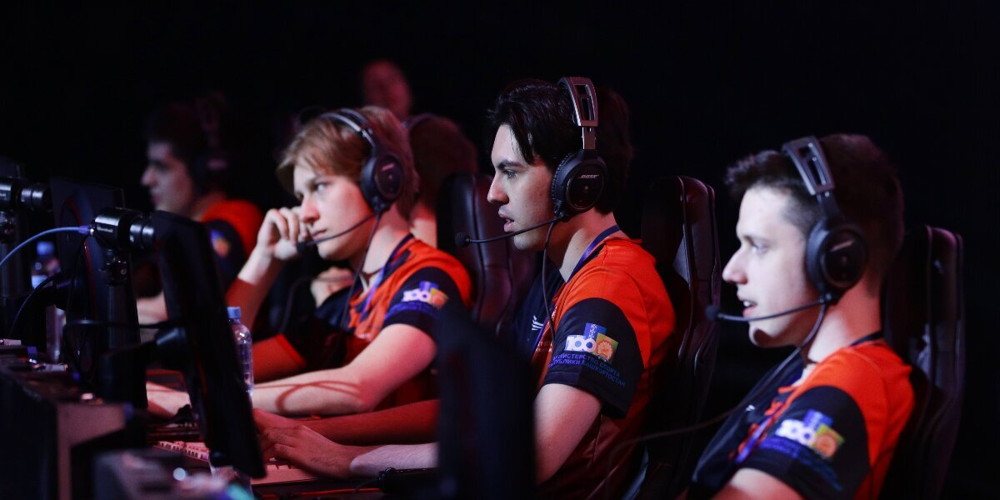

Когда в России появился киберспорт?
Россия первой признала киберспорт как официальный соревновательный вид, это случилось в 2001 году. Все турниры по существовавшим тогда дисциплинам проходили регистрацию и получали статус спортивного соревнования. Правда, уже в 2006 году киберспорт исключили из Всероссийского реестра видов спорта – чиновники не разглядели перспективы и потенциал.
Чтобы вернуть киберспорту статус признанной государством соревновательной отрасли, понадобилось десятилетие. Можно предположить, что за это время российский компьютерный спорт что-то упустил. Но отмена официального признания киберспорта не означает, что в России он перестал существовать. С 2006 по 2016 годы российские спортсмены поучаствовали в соревнованиях по Warcraft 3, Counter Strike, Quake, World of Tanks и другим дисциплинам. Даже без поддержки государства в Москве прошли турниры GameX, Code5, DreamHack, запустилась Московская киберспортивная лига (2010), которая проходит до сих пор.
В 2015 году Москве был основан холдинг ESforce, ставший самой крупной киберспортивной организацией в России. Ей, например, долгое время принадлежал клуб Virtus.Pro, на счету которого победы в престижных турнирах по Dota2 и CS:GO – ESL Pro, EPIC, IEM, DreamHack.
Только в 2016 году Минспорт вернул киберспорту статус официальной дисциплины.
